在Linux下安装Pega7 PE版
Pega版本：Pega 7.1.9
前言
我们可以从Pega PDN上下载PE版本供日常练习使用，但是Pega7的PE版默认只提供了Windows的安装向导，若要在Linux下使用就要自己手动安装了。
安装步骤
下载Pega7 PE版
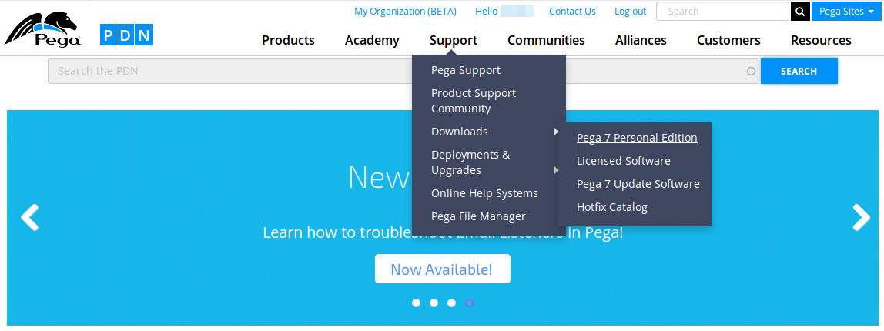
登录PDN后可以申请下载Pega7 PE版。
安装JDK
从Oracle官网下载JDK后解压到Software/jdk，把java配置到path中1
JAVA_HOME="$HOME/Software/jdk"
PATH="$JAVA_HOME/bin:$PATH"
安装PostgreSQL数据库
这里以Ubuntu为例，安装PostgreSQL数据库和pgadmin31
sudo apt-get install postgresql pgadmin3
安装好后打开pgadmin3，创建一个新role——pega，权限给满
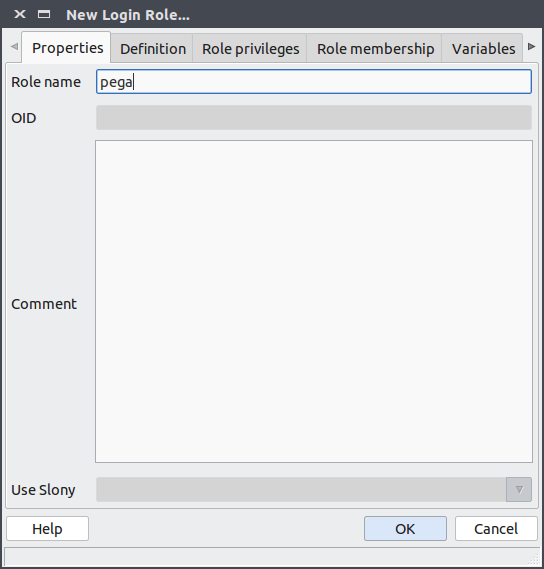
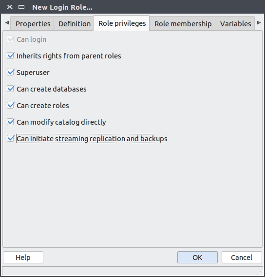
分别运行这3条语句1
2
3
4
5ALTER USER pega PASSWORD 'pega';
CREATE DATABASE pega WITH OWNER pega TEMPLATE template0 ENCODING 'UTF8';
ALTER USER pega SET SEARCH_PATH to "$user",personaledition,public;
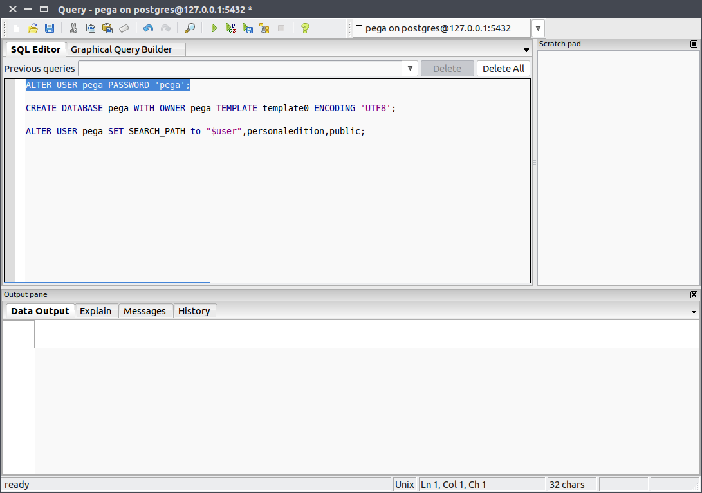
如果在服务器安装，没有图形界面用不了pgadmin3,也可以全部使用命令行完成配置
登录PostgreSQL数据库
2
3
4
5
ALTER USER pega PASSWORD 'pega';
CREATE DATABASE pega WITH OWNER pega TEMPLATE template0 ENCODING 'UTF8';
grant all privileges on database pega to pega;
ALTER USER pega SET SEARCH_PATH to "$user",personaledition,public;执行上面的语句
退出数据库
导入Pega数据
找到第一步中下载到的Pega7 PE版，解压
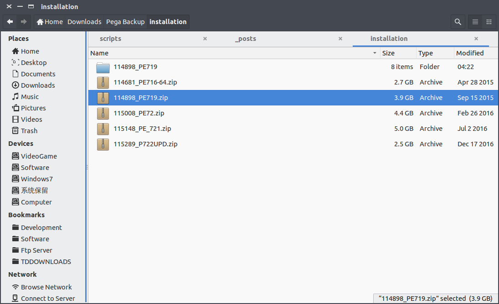
找到data目录下的两个数据库dump文件
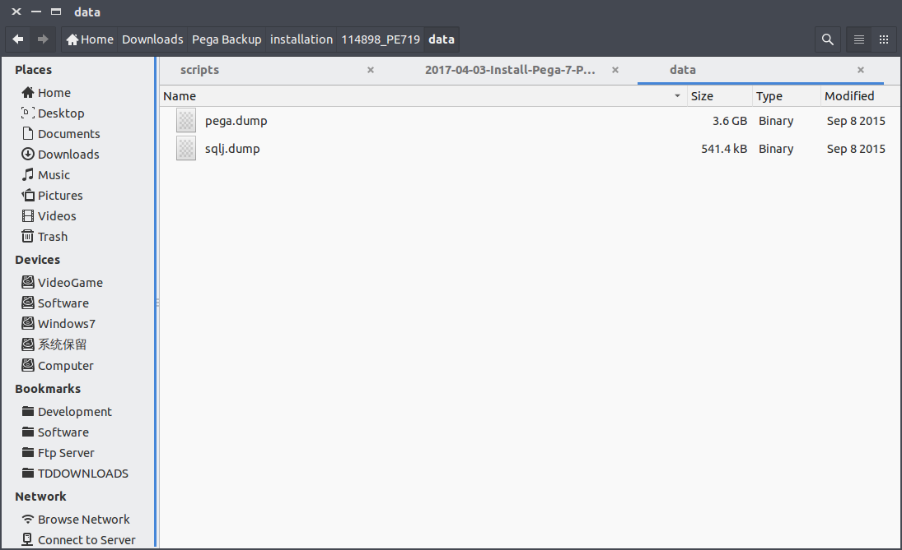
恢复Pega dump文件到数据库（用户名和密码都是pega），这一步的等待时间会很长1
2pg_restore -U pega -h 127.0.0.1 -d pega sqlj.dump
pg_restore -U pega -h 127.0.0.1 -d pega pega.dump
配置Tomcat
在上一步的解压后，继续解压PRPC_PE.jar，再解压PersonalEdition.zip，这样我们就得到了tomcat，但现在的tomcat是不能用的，需要再配置一下
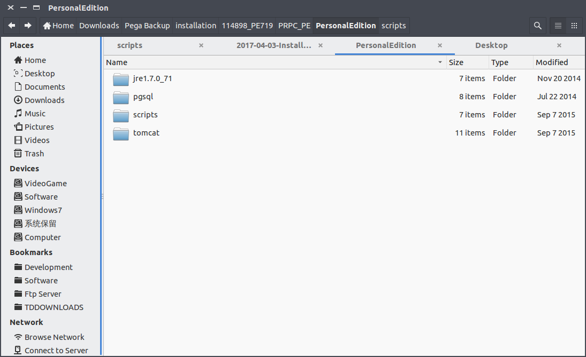
创建一个Pega目录，把刚才得到的tomcat复制过来，再创建一个temp目录
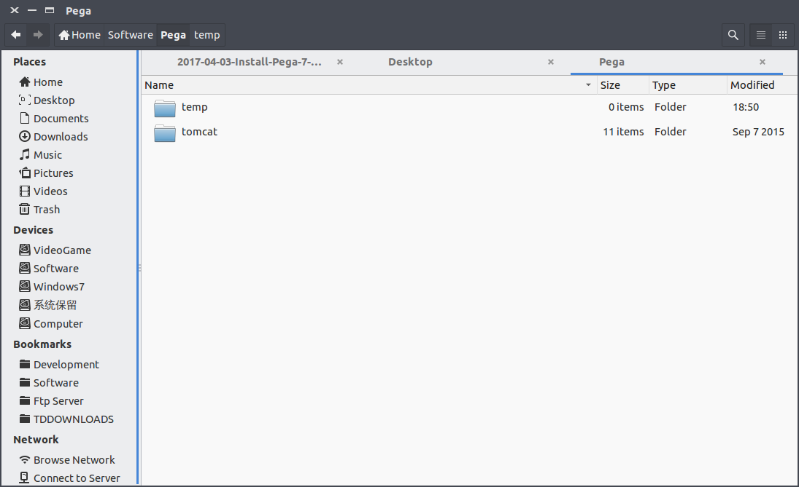
进入tomcat的bin目录，把所以shell脚本加上运行权限1
chmod +x *.sh
再进入conf目录，修改配置文件
context.xml
搜索@PG_PORT，把其替换成你PostgreSQL数据库的端口，默认是5432
搜索@TEMP_DIR，把其替换成你刚才创建的temp目录
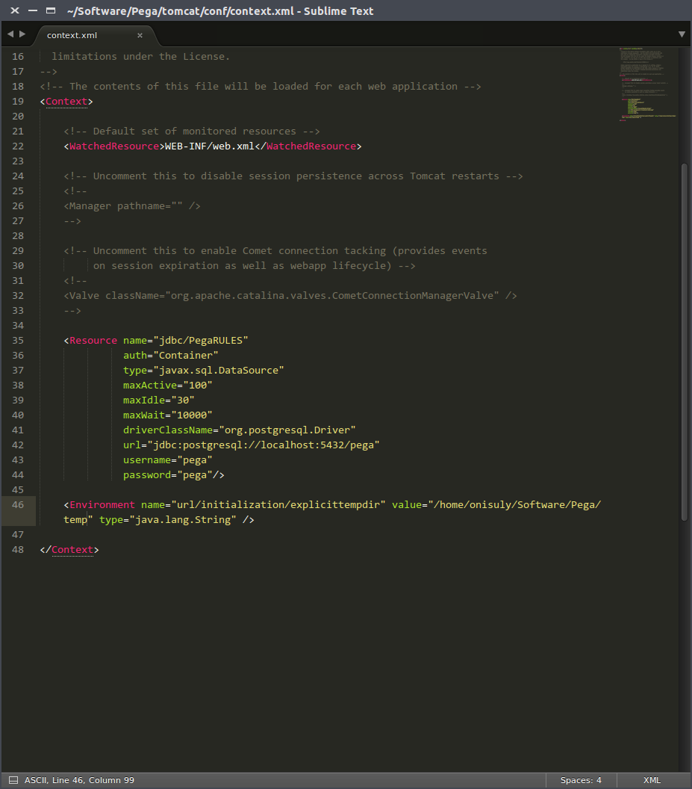
server.xml
搜索@TCHTTP，把其替换成8080（或你想使用的tomcat端口）
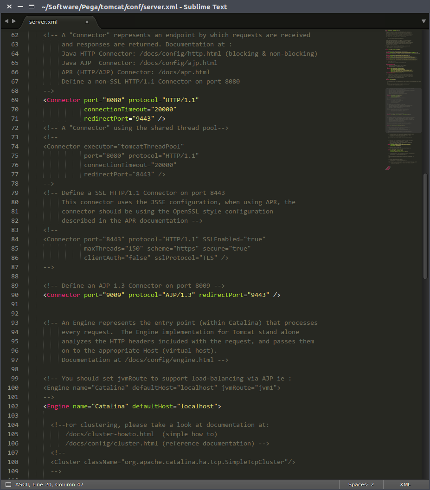
启动Pega7
切换到tomcat的bin目录启动tomcat
1 | ./startup.sh |
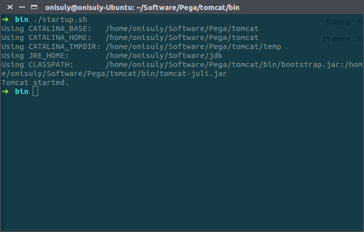
然后等待Pega7启动好就可以使用了
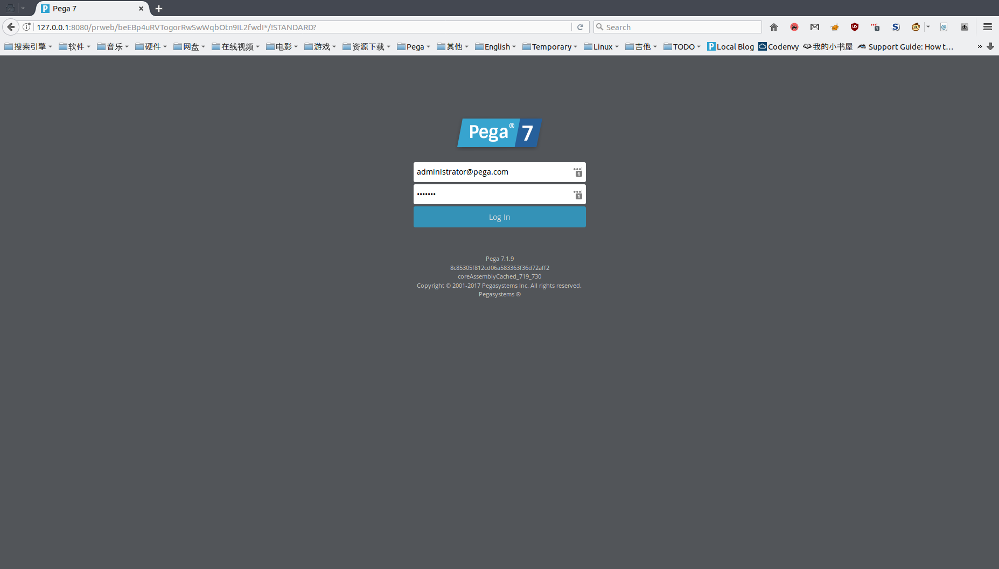